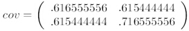
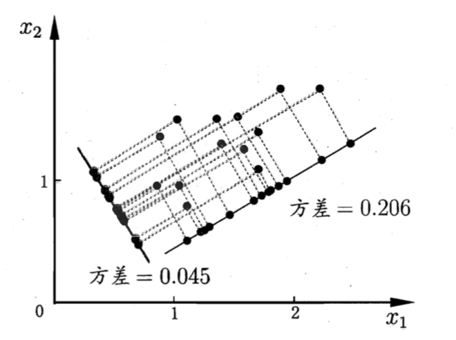

《统计学习方法》学习
《统计学习方法》学习之十四：主成分分析
14. 主成分分析
在开始正式的内容学习之前，建议先阅读以下内容：
原文链接：https://blog.csdn.net/zhongkelee/article/details/44064401
ADD14_1-1. PCA简介
ADD14_1-1.1. 相关背景
上完陈恩红老师的《机器学习与知识发现》和季海波老师的《矩阵代数》两门课之后，颇有体会。最近在做主成分分析和奇异值分解方面的项目，所以记录一下心得体会。
在许多领域的研究与应用中，往往需要对反映事物的多个变量进行大量的观测，收集大量数据以便进行分析寻找规律。多变量大样本无疑会为研究和应用提供了丰富的信息，但也在一定程度上增加了数据采集的工作量，更重要的是在多数情况下，许多变量之间可能存在相关性，从而增加了问题分析的复杂性，同时对分析带来不便。如果分别对每个指标进行分析，分析往往是孤立的，而不是综合的。盲目减少指标会损失很多信息，容易产生错误的结论。
因此需要找到一个合理的方法，在减少需要分析的指标同时，尽量减少原指标包含信息的损失，以达到对所收集数据进行全面分析的目的。由于各变量间存在一定的相关关系，因此有可能用较少的综合指标分别综合存在于各变量中的各类信息。主成分分析与因子分析就属于这类降维的方法。
ADD14_1-1.2. 问题描述
下表1是某些学生的语文、数学、物理、化学成绩统计：

首先，假设这些科目成绩不相关，也就是说某一科目考多少分与其他科目没有关系。那么一眼就能看出来，数学、物理、化学这三门课的成绩构成了这组数据的主成分（很显然，数学作为第一主成分，因为数学成绩拉的最开）。为什么一眼能看出来？因为坐标轴选对了！下面再看一组学生的数学、物理、化学、语文、历史、英语成绩统计，见表2，还能不能一眼看出来：
数据太多了，以至于看起来有些凌乱！也就是说，无法直接看出这组数据的主成分，因为在坐标系下这组数据分布的很散乱。究其原因，是因为无法拨开遮住肉眼的迷雾~如果把这些数据在相应的空间中表示出来，也许你就能换一个观察角度找出主成分。如下图1所示：

但是，对于更高维的数据，能想象其分布吗？就算能描述分布，如何精确地找到这些主成分的轴？如何衡量你提取的主成分到底占了整个数据的多少信息？所以，我们就要用到主成分分析的处理方法。
ADD14_1-1.3. 数据降维
为了说明什么是数据的主成分，先从数据降维说起。数据降维是怎么回事儿？假设三维空间中有一系列点，这些点分布在一个过原点的斜面上，如果你用自然坐标系x,y,z这三个轴来表示这组数据的话，需要使用三个维度，而事实上，这些点的分布仅仅是在一个二维的平面上，那么，问题出在哪里？如果你再仔细想想，能不能把x,y,z坐标系旋转一下，使数据所在平面与x,y平面重合？这就对了！如果把旋转后的坐标系记为x',y',z'，那么这组数据的表示只用x'和y'两个维度表示即可！当然了，如果想恢复原来的表示方式，那就得把这两个坐标之间的变换矩阵存下来。这样就能把数据维度降下来了！但是，我们要看到这个过程的本质，如果把这些数据按行或者按列排成一个矩阵，那么这个矩阵的秩就是2！这些数据之间是有相关性的，这些数据构成的过原点的向量的最大线性无关组包含2个向量，这就是为什么一开始就假设平面过原点的原因！那么如果平面不过原点呢？这就是数据中心化的缘故！将坐标原点平移到数据中心，这样原本不相关的数据在这个新坐标系中就有相关性了！有趣的是，三点一定共面，也就是说三维空间中任意三点中心化后都是线性相关的，一般来讲n维空间中的n个点一定能在一个n-1维子空间中分析！
上一段文字中，认为把数据降维后并没有丢弃任何东西，因为这些数据在平面以外的第三个维度的分量都为0。现在，假设这些数据在z'轴有一个很小的抖动，那么我们仍然用上述的二维表示这些数据，理由是我们可以认为这两个轴的信息是数据的主成分，而这些信息对于我们的分析已经足够了，z'轴上的抖动很有可能是噪声，也就是说本来这组数据是有相关性的，噪声的引入，导致了数据不完全相关，但是，这些数据在z'轴上的分布与原点构成的夹角非常小，也就是说在z'轴上有很大的相关性，综合这些考虑，就可以认为数据在x',y' 轴上的投影构成了数据的主成分！
课堂上老师谈到的特征选择的问题，其实就是要剔除的特征主要是和类标签无关的特征。而这里的特征很多是和类标签有关的，但里面存在噪声或者冗余。在这种情况下，需要一种特征降维的方法来减少特征数，减少噪音和冗余，减少过度拟合的可能性。
PCA的思想是将n维特征映射到k维上（k<n），这k维是全新的正交特征。这k维特征称为主成分，是重新构造出来的k维特征，而不是简单地从n维特征中去除其余n-k维特征。
ADD14_1-2. PCA实例
现在假设有一组数据如下：

行代表了样例，列代表特征，这里有10个样例，每个样例两个特征。可以这样认为，有10篇文档，x是10篇文档中“learn”出现的TF-IDF，y是10篇文档中“study”出现的TF-IDF。
第一步，分别求x和y的平均值，然后对于所有的样例，都减去对应的均值。这里x的均值是1.81，y的均值是1.91，那么一个样例减去均值后即为（0.69,0.49），得到
第二步，求特征协方差矩阵，如果数据是3维，那么协方差矩阵是

这里只有x和y，求解得

对角线上分别是x和y的方差，非对角线上是协方差。协方差是衡量两个变量同时变化的变化程度。协方差大于0表示x和y若一个增，另一个也增；小于0表示一个增，一个减。如果ｘ和ｙ是统计独立的，那么二者之间的协方差就是０；但是协方差是０，并不能说明ｘ和ｙ是独立的。协方差绝对值越大，两者对彼此的影响越大，反之越小。协方差是没有单位的量，因此，如果同样的两个变量所采用的量纲发生变化，它们的协方差也会产生树枝上的变化。
第三步，求协方差的特征值和特征向量，得到

上面是两个特征值，下面是对应的特征向量，特征值0.0490833989对应特征向量为，这里的特征向量都归一化为单位向量。
第四步，将特征值按照从大到小的顺序排序，选择其中最大的k个，然后将其对应的k个特征向量分别作为列向量组成特征向量矩阵。
这里特征值只有两个，我们选择其中最大的那个，这里是1.28402771，对应的特征向量是(-0.677873399, -0.735178656)T。
第五步，将样本点投影到选取的特征向量上。假设样例数为m，特征数为n，减去均值后的样本矩阵为DataAdjust(mn)，协方差矩阵是nn，选取的k个特征向量组成的矩阵为EigenVectors(n*k)。那么投影后的数据FinalData为
FinalData(101) = DataAdjust(102矩阵) x 特征向量(-0.677873399, -0.735178656)T
得到的结果是

这样，就将原始样例的n维特征变成了k维，这k维就是原始特征在k维上的投影。
上面的数据可以认为是learn和study特征融合为一个新的特征叫做LS特征，该特征基本上代表了这两个特征。上述过程如下图2描述：

正号表示预处理后的样本点，斜着的两条线就分别是正交的特征向量（由于协方差矩阵是对称的，因此其特征向量正交），最后一步的矩阵乘法就是将原始样本点分别往特征向量对应的轴上做投影。
整个PCA过程貌似及其简单，就是求协方差的特征值和特征向量，然后做数据转换。但是有没有觉得很神奇，为什么求协方差的特征向量就是最理想的k维向量？其背后隐藏的意义是什么？整个PCA的意义是什么？
ADD14_1-3. PCA推导
先看下面这幅图：

在第一部分中，我们举了一个学生成绩的例子，里面的数据点是六维的，即每个观测值是6维空间中的一个点。我们希望将6维空间用低维空间表示。
先假定只有二维，即只有两个变量，它们由横坐标和纵坐标所代表；因此每个观测值都有相应于这两个坐标轴的两个坐标值；如果这些数据形成一个椭圆形状的点阵，那么这个椭圆有一个长轴和一个短轴。在短轴方向上，数据变化很少；在极端的情况，短轴如果退化成一点，那只有在长轴的方向才能够解释这些点的变化了；这样，由二维到一维的降维就自然完成了。
上图中，u1就是主成分方向，然后在二维空间中取和u1方向正交的方向，就是u2的方向。则n个数据在u1轴的离散程度最大（方差最大），数据在u1上的投影代表了原始数据的绝大部分信息，即使不考虑u2，信息损失也不多。而且，u1、u2不相关。只考虑u1时，二维降为一维。
椭圆的长短轴相差得越大，降维也越有道理。
更多内容详见原文链接。
原文链接：https://terrifyzhao.github.io/2018/06/30/PCA主成分分析.html
ADD14_2-1. PCA简介
说到PCA你是不是第一时间想到的是对协方差矩阵做特征值分解，但是为什么这么做呢？之前看过的大部分PCA博文也都是只简单介绍了PCA的流程，对其中的推导过程与原理并没有详细介绍，这篇文章的目的是从数学的角度，手推PCA每一个步骤，帮助读者了解PCA的工作机制是什么。文中的某些数学公式，可能会对某些读者产生不适，我会尽可能的用白话把其中原理讲解的通俗易懂。
ADD14_2-2. 向量的内积
在开始下面的内容之前，我们需要弄懂几个基本概念，首先是向量的内积。
向量的内积我们在高中就已经学过,两个维数相同的向量的内积被定义为：
这个定义很好理解，那么内积的几何意义是什么呢，我们看个图：
内积的另一种我们熟悉的表述方法为向量的模乘上向量之间的夹角的余弦值，即：
如果我们假设 B 的模为 1，即单位向量，那么：
这里我们可以发现，内积其实就是 A 向量在 B 向量的方向上的投影的长度。
ADD14_2-3. 散度
接下来我们考虑一个问题：对于空间中的所有样本点，如何找到一个超平面对所有的样本进行恰当的表达？举个例子，例如我们在二维空间内，想把数据降为一维，那么应该把样本点投影到 x 轴还是 y 轴呢？
对于这个问题，我们需要找到的超平面需满足最大可分性：样本点在这个超平面上的投影能尽可能分开，这个分开的程度我们称之为散度，散度可以采用方差或协方差来衡量（在机器学中，样本的方差较大时，对最终的结果影响会优于方差较小的样本）如图，对于方差 0.2 的超平面散度高于方差为 0.045 的超平面，因此 0.2 方差的超平面即为我们需要的。

这里我们再简单补充下协方差的知识：
方差是用来形容单个维度的样本的波动程度，协方差是指多个维度的样本数据的相关性，其计算公式为：
其中 ，绝对值越大说明相关性越高。注意，协方差不等于相关系数，相关系数是协方差除标准差，相关系数的相除操作把样本的单位去除了，因此结果更加标准化一些，实际含义类似。
ADD14_2-4. 协方差矩阵
PCA 的首要目标是让投影后的散度最大，因此我们要对所有的超平面的投影都做一次散度的计算，并找到最大散度的超平面。为了方便计算我们需要构建协方差矩阵。
图中是一个三维的协方差矩阵，其中对角线是样本本身的协方差即方差，非对角线是不同样本之间的协方差。
注意，在 PCA 中，我们会对所有的数据进行中心化的操作，中心化后数据的均值为 0，即：
根据我们上文提到的协方差计算公式，我们可以得到数据样本的协方差矩阵为：
我们设可投影的超平面为 ，我们要求投影的协方差，是不是可以根据我们第一条提到的向量的内积呢？因此我们可以得到投影后的值为 ，我们把投影后的方差计算一下
这里我们进一步的做中心化操作，因此期望值为 0，所以有：
仔细看，投影的方差即是原数据样本的协方差矩阵乘 。为了后续表述方便，我们设原数据样本的协方差矩阵为 ，即：
ADD14_2-5. 最大化散度
到了这一步，我们获得了投影的散度的计算方法。我们再看下 PCA 的首要目标：让投影后的散度最大，既然是要最大化散度，那么就会涉及到我们熟悉的优化问题了，不过这里有一个限制条件，即超平面向量的模为 1 即：
对于有限制条件的优化问题，我们采用拉格朗日乘子法来解决，即：
对于求极值的问题，当然是求导啦，这里我们对 求导，即：
我们令导数为 0，即：
对于 这个公式是不是很熟悉，没错就是特征值，特征向量的定义式，其中 即是特征值， 即是特征向量，这也就解释了文章开头提到的问题，为啥 PCA 是求特征值与特征向量即特征值分解。
最后我们把求出来的偏导带入到 中，即：
由公式可知散度的值只由 来决定， 的值越大，散度越大，也就是说我们需要找到最大的特征值与对应的特征向量。
ADD14_2-6. 特征值与特征向量
通过上面的推导我们知道了为啥要求特征值与特征向量，那么特征向量和特征值到底有什么意义呢？
首先，我们要明确一个矩阵和一个向量相乘有什么意义？即等式左边CV的意义。矩阵和向量相乘实际上是把向量投影到矩阵的列空间，更通俗的理解就是对该向量做个旋转或伸缩变换，我们来看个例子。
从图中我们可以发现（ 为特征向量，， 为非特征向量）：
- 一个矩阵和该矩阵的非特征向量相乘是对该向量的旋转变换，如 。
- 一个矩阵和该矩阵的特征向量相乘是对该向量的伸缩变换，如 。
再看下等式右边 ，一个标量和一个向量相乘，没错就是对一个向量的伸缩变换。
通过以上分析，我们发现， 的意思就是：特征向量在矩阵的伸缩变换下，那到底伸缩了多少倍呢？伸缩了 “特征值”倍。
ADD14_2-7. 降维
接下来就是我们的最后一步了，我们把所有的特征值按照降序排列，根据我们最终需要的维度 来选取前 大的特征向量，并组成一个矩阵 ，把原始样本数据与投影矩阵做矩阵乘法，即可得到降维后的结果。对于超参数 的选择，可采用交叉验证来选择。最后上一张PCA的流程图。
ADD14_2-8. 总结
对于特征较多的数据样本，计算协方差矩阵是很耗时的操作，因此，在实践中会对数据样本做奇异值分解来代替协方差矩阵的特征值分解，感兴趣的读者可参阅其他博文。
降维对于维度较高的数据集是很有必要的，虽然部分数据被舍弃了，但是舍弃这部分信息之后能使样本的采样密度增加，这正是降维的重要动机，另一方面，当数据受到噪声影响时，最小的特征值所对应的特征向量往往与噪声有关，将他们舍弃能在一定程度上起到去噪的效果。
主成分分析(principal component analysis, PCA)是一种常用的无监督学习方法，这一方法利用正交变换把由线性相关变量表示的观测数据转换为少数几个由线性无关变量表示的数据，线性无关的变量称为主成分。主成分的个数通常小于原始变量的个数，所以主成分分析属于降维方法。主成分分析主要用于发现数据中的基本结构， 即数据中变量之间的关系，是数据分析的有力工具，也用于其他机器学习方法的前处理。
14.1. 总体主成分分析
14.1.1. 基本想法
统计分析中，数据的变量之间可能存在相关性，以致增加了分析的难度。于是，考虑由少数不相关的变量来代替相关的变量，用来表示数据，并且要求能够保留数据中的大部分信息。
主成分分析中，首先对给定数据进行规范化，使得数据每一变量的平均值为 0，方差为 1。之后对数据进行正交变换，原来由线性相关变量表示的数据，通过正交变换变成由若干个线性无关的新变量表示的数据。新变量是可能的正交变换中变量的方差的和（信息保存）最大的，方差表示在新变量上信息的大小。将新变量依次称为第一主成分、第二主成分等。这就是主成分分析的基本思想。通过主成分分析，可以利用主成分近似地表示原始数据，这可理解为发现数据的“基本结构”；也可以把数据由少数主成分表示，这可理解为对数据降维。
下面给出主成分分析的直观解释。数据集合中的样本由实数空间（正交坐标系）中的点表示，空间的一个坐标轴表示一个变量，规范化处理后得到的数据分布在原点附近。对原坐标系中的数据进行主成分分析等价于进行坐标系旋转变换，将数据投影到新坐标系的坐标轴上；新坐标系的第一坐标轴、第二坐标轴等分别表示第一主成分、 第二主成分等，数据在每一轴上的坐标值的平方表示相应变量的方差；并且，这个坐标系是在所有可能的新的坐标系中，坐标轴上的方差的和最大的。
例如，数据由两个变量 和 表示，存在于二维空间中，每个点表示一个样本，如下图(a)所示。对数据己做规范化处理，可以看出，这些数据分布在以原点为中心的左下至右上倾斜的椭圆之内。 很明虽在这个数据中的变量 和 是线性相关的，具体地，当知道其中一个变量 的取值时，对另一个变量 的预测不是完全随机的；反之亦然。
主成分分析对数据进行正交变换，具体地，对原坐标系进行旋转变换，并将数据在新坐标系表示，如下图(b)所示。数据在原坐标系由变量 和 表示，通过正交变换后，在新坐标系里，由变量 和 表示。主成分分析选择方差最大的方向（第一主成分）作为新坐标系的第一坐标轴，即 轴，在这里意味着选择椭圆的长轴作为新坐标系的第一坐标轴；之后选择与第一坐标轴正交，且方差次之的方向（第二主成分）作为新坐标系的第二坐标轴，即 轴，在这里意味着选择椭圆的短轴作新坐标系的第二坐标轴。 在新坐标系里，数据中的变量 和 是线性无关的，当知道其中一个变量 的取值时，对另一个变量 的预测是完全随机的；反之亦然。如果主成分分析只取第一主成分，即新坐标系的 轴，那么等价于将数据投影在椭圆长轴上，用这个主轴表示数据，将二维空间的数据压缩到一维空间中。
下面再看方差最大的解释。假设有两个变量 和 ，三个样本点 、、，样本分布在由 和 轴组成的坐标系中，如图14.2所示。对坐标系进行旋转变换，得到新的坐标轴 ，表示新得变量 。样本点 、、 在 轴上投影，得到 轴得坐标值 、、。坐标值的平方和 表示样本在变量 上的方差和。主成分分析旨在选取正交变换中方差最大的变量，作为第一主成分，也就是旋转变换中坐标值的平方和最大的轴。注意到旋转变换中样本点到原点的距离的平方和 OA^{'2} + OB^{'2} + OC^{'2} 最大等价于样本点到 轴的距离的平方和 $OA^{'2} + OB^{'2} + OC^{'2} 最小。所以，等价地, 主成分分析在旋转变换中选取离样本点的距离平方和最小的轴，作为第一主成分。第二主成分等的选取，在保证与已选坐标轴正交的条件下，类似地进行。
在数据总体上进行的主成分分析称为总体主成分分析，在有限样本上进行的主成分分析称为样本主成分分析，前者是后者的基础。
14.1.2. 定义和导出
更多内容详见书籍。
14.1.3. 主要性质
首先叙述一个关于总体主成分的定理。这一定理阐述了总体主成分与协方差矩阵的特征值和特征向量的关系，同时给出了一个求主成分的方法（拉格朗日乘子法）。
更多内容详见书籍。
14.1.4. 主成分的个数
主成分分析的主要目的是降维，所以一般选择 个主成分（线性无关变量）来代替 个原有变量（线性相关变量），使问题得以简化，并能保留原有变量的大部分信息。这里所说的信息是指原有变量的方差。为此，先给出一个定理，说明选择 个主成分是最优选择。
书中描述了两个定理可以作为选择 个主成分的理论依据。具体选择 的方法，通常利用方差贡献率。
更多内容详见书籍。
14.1.5. 规范化变量的总体主成分
在实际问题中，不同变量可能有不同的量纲，直接求主成分有时会产生不合理的结果。为了消除这个影响，常常对各个随机变量实施规范化，使其均值为 0，方差为 1。
更多内容详见书籍。
14.2. 样本主成分分析
14.1 节叙述了总体主成分分析，是定义在样本总体上的。在实际问题中，需要在观测数据上进行主成分分析，这就是样本主成分分析。有了总体主成分的概念，容易理解样本主成分的概念。样本主成分也和总体主成分具有相同的性质。所以本节重点叙述样本主成分的算法。
14.2.1. 样本主成分的定义与性质
更多内容详见书籍。
14.2.2. 相关矩阵的特征值分解算法
传统的主成分分析通过数据的协方差矩阵或相关矩阵的特征值分解进行，现在常用的方法是通过数据矩阵的奇异值分解进行。
更多内容详见书籍。
14.2.3. 数据矩阵的奇异值分解算法
给定样本矩阵 ，利用数据矩阵奇异值分解进行主成分分析。
更多内容详见书籍。